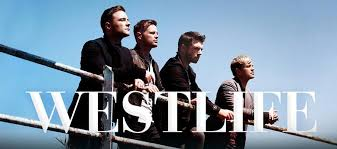
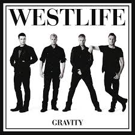
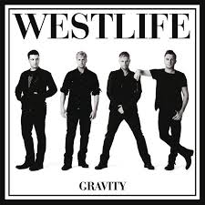
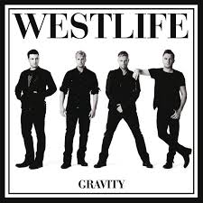

These are the albums images in order with the last paragraph.
-



 


Westlife are an Irish boy band, formed in 1998 in Sligo, Ireland. The group currently consists of members Shane Filan, Markus Feehily, Kian Egan, and Nicky Byrne; one of its original members, Brian McFadden, departed the band in 2004. The group disbanded in 2012 and later reunited in 2018.
The group have released twelve studio albums: four as a five-piece and eight as a four-piece. They rose to fame with their debut international self-titled studio album, Westlife (1999). It was followed by Coast to Coast (2000), World of Our Own (2001), Unbreakable – The Greatest Hits Vol. 1 (2002), and Turnaround (2003), which continued the group's success worldwide. The group released their cover albums Allow Us to Be Frank (2004) and The Love Album (2006) and the studio albums Face to Face (2005) and Back Home (2007). After a hiatus of studio recording for almost one year in 2008, they regrouped and released the studio albums Where We Are (2009), and Gravity (2010), and the compilation album Greatest Hits (2011). After eight years, the quartet group released their eleventh studio album, Spectrum, in 2019, followed by their twelfth studio album, Wild Dreams, in 2021.
